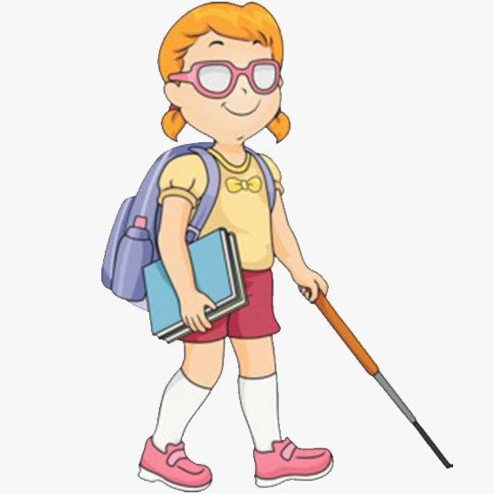

Disability Awareness
According to the 2015 Disability at a Glance statistical data by UNESCAP, Japan ranks third with the
largest number of people with disabilities in Southeast Asian countries with a total of 5,111,600
people (6.2%). This has become the basis for the government and its citizens to pay attention to
persons with disabilities. Like the Law on the Elimination of Discrimination against Persons with
Disabilities made the government make further revisions and made many disabled people get jobs.
Various public facilities have been prepared, special schools for disabled people are built with
adequate systems and facilities, special teachers are trained and empowered to teach students with
disabilities, technology is made to facilitate them, and the most important is to shape the
mentality of its citizens to accept their whereabouts without any discrimination or negative views
towards persons with disabilities.
The word "person" is defined as someone who is suffering (suffering) something. The word
"disability" is a condition or function that is considered to experience significant disruption
compared to the usual standards of a person or group. This term is used to refer to individual
functions, including physical disorders, sensory disorders, cognitive disorders, mental disorders,
and various types of chronic diseases. Thus, a person with a disability is anyone who experiences
physical, intellectual, mental, and / or sensory limitations in the long term that in interacting
with the environment can experience obstacles and difficulties to participate fully and effectively
with other citizens based on equal rights.
Over time, there is a term that is considered better than the term "Persons with Disabilities",
which is Diffable when spoken in Indonesian is Difabel. Diffable or Different Able People is someone
who has the ability, the same as people in general. But in a different way. An acronym that is
considered more neutral and humane for those who are considered to have physical or psychological
limitations. For example, a Deaf has communication skills, but in a different way, that is, using
sign language, or a person who has obstacles when mobilizing, they have the ability to mobilize but
are assisted by using a wheelchair when mobilizing.
Type Of Disability
Categories of disability types include various physical and mental impairments that can hamper or
reduce a person's ability to carry out their day to day activities. These impairments can be
termed as disability of the person to do his/her day to day activities. Disability can be broken
down into a 4 main types of disability.
Physically Disabled

A physical disability is the long-term loss or impairment of part of a person’s body function,
resulting in a limitation of physical functioning, mobility, dexterity or stamina. Due to the
functional loss the person will experience the inability to perform normal movements of the
body, such as walking and mobility, sitting and standing, use of hands and arms, muscle control,
etc.
The two major categories of physical disabilities are: (1) the musculo skeletal disability,
including loss or deformity of limbs, Osteogensis Imperfecta and muscular dystrophy; and (2) the
neuro musculo disability, including cerebral palsy, Spina Bifida, poliomyelitis, stroke, head
injury and spinal cord injury. The musculo skeletal disability is defined as the inability to
carry out distinctive activities associated with movements of the body parts due to mucular or
bone deformities, diseases or degeneration. The neuro musculo disability is defined as the
inability to perform controlled movements of affected body parts due to diseases, degeneration
or disorder of the nervous system.
Blind

Blindness is a general term used for the condition of someone who has a disorder or a barrier in
their sense of sight. Based on the level of impairment Blind people are divided into two, namely
total blindness and those who still have vision (Low Vision). Aids for mobility for the blind
using a special stick, which is white with a horizontal red line. As a result of the loss /
decrease in the function of the sense of sight, the blind try to maximize the function of the
other senses such as, touch, smell, hearing, and so forth so that not a few blind people who
have extraordinary abilities for example in the field of music or science.
Deaf
Hearing impairment, deafness, or hearing loss refers to the total or partial inability to hear
sounds.
Symptoms may be mild, moderate, severe, or profound. A patient with a mild hearing impairment
may have understanding speech problems, especially if there is a lot of noise around, while
those with moderate deafness may need a hearing aid.
Some people are severely deaf and rely on lip-reading to communicate with others. People who are
profoundly deaf can hear nothing at all and can find themselves totally reliant on lip-reading
or sign language.
In the United States, around 15 percent of people over the age of 18 years report some level of
hearing loss.
Mental Disability
Persons with mental disabilities are someone who in the long run experiences obstacles in
interaction and participation in society based on equality with others.
Mental disability is a person who has physical, mental, social problems, growth and development,
and / or quality of life.
Accessibility
Accessibility in the sense considered here refers to the design of products, devices, services,
or
environments so as to be usable by people with disabilities. The concept of accessible design
and
practice of accessible development ensures both "direct access" (i.e. unassisted) and "indirect
access" meaning compatibility with a person's assistive technology (for example, computer screen
readers).
Accessibility can be viewed as the "ability to access" and benefit from some system or entity.
The
concept focuses on enabling access for people with disabilities, or special needs, or enabling
access through the use of assistive technology; however, research and development in
accessibility
brings benefits to everyone.
Accessibility is not to be confused with usability, which is the extent to which a product (such
as
a device, service, or environment) can be used by specified users to achieve specified goals
with
effectiveness, efficiency and satisfaction in a specified context of use.
Accessibility is strongly related to universal design which is the process of creating products
that
are usable by people with the widest possible range of abilities, operating within the widest
possible range of situations. This is about making things accessible to all people (whether they
have a disability or not).
Wheelchair Ramp
A wheelchair ramp is an inclined plane installed in addition to or instead of stairs. Ramps
permit wheelchair users, as well as people pushing strollers, carts, or other wheeled objects,
to more easily access a building.
A wheelchair ramp can be permanent, semi-permanent or portable. Permanent ramps are designed to
be bolted or otherwise attached in place. Semi-permanent ramps rest on top of the ground or
concrete pad and are commonly used for the short term. Permanent and semi-permanent ramps are
usually of aluminum, concrete or wood. Portable ramps are usually aluminum and typically fold
for ease of transport. Portable ramps are primarily intended for home and building use but can
also be used with vans to load an unoccupied mobility device or to load an occupied mobility
device when both the device and the passenger are easy to handle.
Ramps must be carefully designed in order to be useful. In many places, laws dictate a ramp's
minimum width and maximum slope.
In general, reduced incline rises are easier for wheelchair users to traverse and are safer in
icy climates. However, they consume more space and require traveling a greater distance to go
up. Hence, in some cases it is preferable to include an elevator or other type of wheelchair
lift.
In many countries, wheelchair ramps and other features to facilitate universal access are
required by building code when constructing new facilities which are open to the public.
Internationally, the United Nations Convention on the Rights of Persons with Disabilities
mandates nations take action to "enable persons with disabilities to live independently and
participate fully in all aspects of life." Among other requirements, it compels countries to
institute "minimum standards and guidelines..." for accessibility.
Guiding Block
One of the different views on public roads now is the presence of tiles with long dot and line
textures found on the sidewalk. These tiles are called Guiding Blocks. Guiding Block if
interpreted into the Indonesian language means a block or mold as a road guide. Meaning Guiding
Block is a ceramic or tile that has a special design such as dots and straight lines intended to
help direct pedestrians who have special needs, especially for blind people. Besides being named
Guiding Block, the textured tile is also known as Tactile Paving or Kenji Block.
The installation of the Guiding Block is an application of Minister of Public Works Regulation
No. 30 of 2006 concerning Technical Guidelines for Facilities and Accessibility in Buildings and
Environments. One of the accessibility is to use various public facilities for the disabled,
especially the visually impaired by utilizing Guiding Block which adapts textures on braile
letters so that they are easily recognized and can make it easier for blind people. Guiding
Block is installed at public places and facilities such as sidewalks, terminals, stations and
city parks.
Sign Language

Sign languages (also known as signed languages) are languages that use the visual-manual modality
to convey meaning. Sign languages are expressed through manual articulations in combination with
non-manual elements. Sign languages are full-fledged natural languages with their own grammar
and lexicon. Sign languages are not universal and they are not mutually intelligible with each
other, although there are also striking similarities among sign languages.
Linguists consider both spoken and signed communication to be types of natural language, meaning
that both emerged through an abstract, protracted aging process and evolved over time without
meticulous planning. Sign language should not be confused with body language, a type of
nonverbal communication.
Wherever communities of deaf people exist, sign languages have developed as handy means of
communication and they form the core of local deaf cultures. Although signing is used primarily
by the deaf and hard of hearing, it is also used by hearing individuals, such as those unable to
physically speak, those who have trouble with spoken language due to a disability or condition
(augmentative and alternative communication), or those with deaf family members, such as
children of deaf adults.
It is unclear how many sign languages currently exist worldwide. Each country generally has its
own native sign language, and some have more than one. The 2013 edition of Ethnologue lists 137
sign languages. Some sign languages have obtained some form of legal recognition, while others
have no status at all.
Linguists distinguish natural sign languages from other systems that are precursors to them or
derived from them, such as invented manual codes for spoken languages, home sign, "baby sign",
and signs learned by non-human primates.